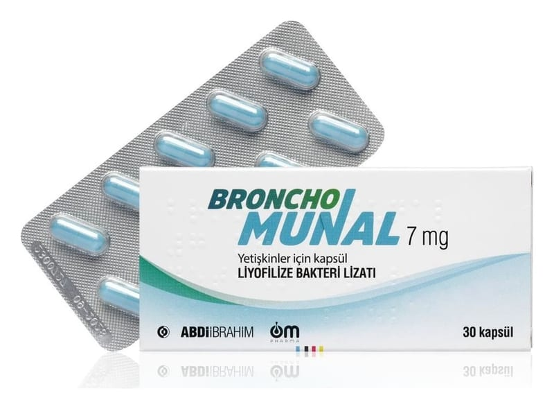

Broncho-Munal 7 mg Yetiskinler İçin Kapsül, 30 Adet

Ne için kullanılır
KT · Bölüm 1Opak mavi gövde ve opak mavi kapaktan oluşan kapsül formundaki BRONCHO-MUNAL®renkli baskılı karton kutuda, 30 kapsüllük blister ambalajda sunulmaktadır.
BRONCHO-MUNAL®, bağışıklık güçlendirmek için kullanılır. BRONCHO-MUNAL®, yetişkinlerde ve çocuklarda tekrarlayan solunum yolu enfeksiyonlarını ve kronik bronşitten kaynaklanan akut atak (pnömoni (alt solunum yolu enfeksiyonu) hariç) tekrarlarının önlenmesi için ana tedaviye ek olarak destekleyici önleyici tedavi olarak kullanılır.
Bu ilacı kullanmaya başlamadan önce bu KULLANMA TALİMATINI dikkatlice okuyunuz, çünkü sizin için önemli bilgiler içermektedir. • Bu kullanma talimatını saklayınız. Daha sonra tekrar okumaya ihtiyaç duyabilirsiniz. • Eğer ilave sorularınız olursa, lütfen doktorunuza veya eczacınıza danışınız. • Bu ilaç kişisel olarak sizin için reçete edilmiştir, başkalarına vermeyiniz. • Bu ilacın kullanımı sırasında, doktora veya hastaneye gittiğinizde doktorunuza bu ilacı kullandığınızı söyleyiniz. • Bu talimatta yazılanlara aynen uyunuz. İlaç hakkında size önerilen dozun dışında yüksek veya düşük doz kullanmayınız.
Sayfa 2 / 6